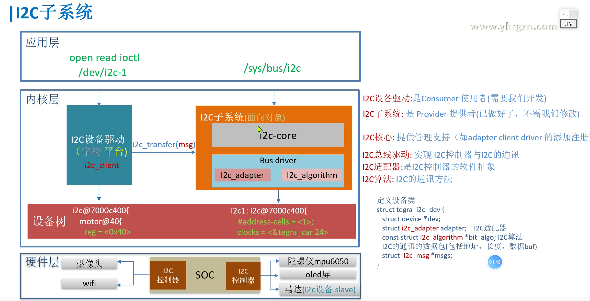

I2c
框架和例子

协议具体对应到I2C algorithm 那一层。将controller 和 device 看成一个整体，就是设备类。
刚开始最重要的就是熟悉框架！配合之前的例子。
设备访问全流程：I2C camera 为例
-
硬件架构连接
graph LR SOC["ARM SoC"] --> I2C_Ctrl["I2C控制器（Platform设备）"] I2C_Ctrl -->|SCL/SDA| Camera["OV5640 Camera（I2C设备）"] I2C_Ctrl -->|MMIO| Registers["I2C控制器寄存器"] Camera -->|MIPI/Parallel| Image_Sensor["图像传感器"]硬件特性：
- I2C控制器：SoC内部模块，地址
0x400A0000（内存映射） - OV5640 Camera：从设备地址
0x3C，通过I2C配置寄存器 - 数据接口：图像数据通过MIPI/Parallel接口传输（与I2C控制总线分离）
- I2C控制器：SoC内部模块，地址
-
设备树配置
// SoC级定义：I2C控制器作为Platform设备 i2c1: i2c@400a0000 { compatible = "vendor,soc-i2c"; reg = <0x400a0000 0x1000>; // MMIO地址范围 interrupts = <0 32 IRQ_TYPE_LEVEL_HIGH>; clocks = <&i2c_clk>; #address-cells = <1>; #size-cells = <0>; // Camera设备节点 ov5640: camera@3c { compatible = "ovti,ov5640"; reg = <0x3c>; // I2C从地址 vdda-supply = <&vdd_cam>; // 电源管理 clocks = <&cam_clk>; // 输入时钟 port { // MIPI CSI接口绑定 ov5640_to_csi: endpoint { remote-endpoint = <&csi_to_ov5640>; }; }; }; };关键点：
- I2C控制器通过
reg属性声明MMIO地址 - Camera设备通过
reg指定I2C从地址 - 电源/时钟资源通过
vdda-supply和clocks关联
这里需要注意，由于 controller 的 not discoverabl，所以要使用设备树来传递配置。
- I2C控制器通过
-
内核驱动流程（代码级实现）
-
I2C控制器驱动（Platform驱动）
// 注册Platform驱动 static struct platform_driver soc_i2c_driver = { .probe = soc_i2c_probe, .driver = { .name = "soc-i2c", .of_match_table = soc_i2c_of_match, }, }; module_platform_driver(soc_i2c_driver); // Probe函数初始化硬件 static int soc_i2c_probe(struct platform_device *pdev) { // 解析设备树资源 struct resource *res = platform_get_resource(pdev, IORESOURCE_MEM, 0); void __iomem *base = devm_ioremap_resource(&pdev->dev, res); writel(CTRL_ENABLE, base + CTRL_REG); // 使能控制器 // 配置I2C时钟分频 writel(CLK_DIV_400K, base + I2C_CLK_REG); // 注册I2C适配器 struct i2c_adapter *adap = i2c_alloc_adapter(); adap->algo = &soc_i2c_algo; // 实现i2c_algorithm i2c_add_adapter(adap); // 生成/sys/class/i2c-dev/i2c-1 } -
Camera驱动（I2C设备驱动）
// 定义I2C设备ID表 static const struct i2c_device_id ov5640_id[] = { { "ov5640", 0 }, {} }; MODULE_DEVICE_TABLE(i2c, ov5640_id); // 定义设备树匹配表 static const struct of_device_id ov5640_of_match[] = { { .compatible = "ovti,ov5640" }, {} }; // 注册I2C驱动 static struct i2c_driver ov5640_i2c_driver = { .probe = ov5640_probe, .remove = ov5640_remove, .id_table = ov5640_id, .driver = { .name = "ov5640", .of_match_table = ov5640_of_match, }, }; module_i2c_driver(ov5640_i2c_driver); static int ov5640_probe(struct i2c_client *client) { // 1. 获取设备树配置 struct device_node *np = client->dev.of_node; u32 addr = client->addr; // I2C地址（0x30） u32 speed = of_property_read_u32(np, "clock-frequency", &speed); // 2. 初始化摄像头硬件 camera_sensor_power_on(&client->dev); i2c_smbus_write_byte_data(client, REG_CONFIG, 0x01); // 配置寄存器 // 3. 注册字符设备或V4L2接口 v4l2_device_register(&client->dev, &camera_v4l2_dev); } -
I2C数据传输核心（i2c_algorithm实现）
// 实现I2C算法（控制器级） static struct i2c_algorithm soc_i2c_algo = { .master_xfer = soc_i2c_xfer, .functionality = soc_i2c_func, }; // 实际传输函数 static int soc_i2c_xfer(struct i2c_adapter *adap, struct i2c_msg *msgs, int num) { void __iomem *base = adap->algo_data; // 遍历每个消息 for (int i = 0; i < num; i++) { // 设置从地址和方向 writel(msgs[i].addr << 1 | (msgs[i].flags & I2C_M_RD), base + I2C_ADDR_REG); // 写入数据（写操作） if (!(msgs[i].flags & I2C_M_RD)) { for (int j = 0; j < msgs[i].len; j++) writeb(msgs[i].buf[j], base + I2C_DATA_REG); } // 触发传输 writel(CTRL_START, base + I2C_CTRL_REG); wait_for_completion(&i2c_complete); // 等待中断 } return num; }// 单次写入寄存器 i2c_smbus_write_byte_data(client, reg, value); // 单次读取寄存器 value = i2c_smbus_read_byte_data(client, reg); // 复杂传输（多个消息） struct i2c_msg msg[] = { { .addr = client->addr, .flags = 0, .len = 2, .buf = write_buf }, // 写操作 { .addr = client->addr, .flags = I2C_M_RD, .len = 4, .buf = read_buf }, // 读操作 }; ret = soc_i2c_xfer(client->adapter, msg, 2);
-
-
用户空间访问流程
-
通过sysfs直接操作（调试用）
# 列出所有I2C总线 ls /sys/class/i2c-dev/ # 直接读写Camera寄存器 i2cset -y 1 0x3c 0x3008 0x80 # 复位传感器 i2cget -y 1 0x3c 0x300A # 读取芯片版本 -
通过V4L2框架访问（标准方式）
// 用户空间代码示例 struct v4l2_format fmt = { .type = V4L2_BUF_TYPE_VIDEO_CAPTURE, .fmt.pix = { .width = 1920, .height = 1080, .pixelformat = V4L2_PIX_FMT_YUYV } }; ioctl(fd, VIDIOC_S_FMT, &fmt); // 启动视频流 struct v4l2_buffer buf; ioctl(fd, VIDIOC_REQBUFS, &req); ioctl(fd, VIDIOC_QBUF, &buf); ioctl(fd, VIDIOC_STREAMON, &type);
-
-
关键内核API与数据结构
步骤 代码路径 核心函数/结构体 设备树解析 drivers/of/platform.cof_platform_populatePlatform驱动注册 drivers/i2c/busses/i2c-vendor-controller.cplatform_driver_register,i2c_add_adapterI2C驱动注册 drivers/media/i2c/camera-sensor-driver.ci2c_register_driver,i2c_smbus_*数据传输 drivers/i2c/i2c-core.ci2c_transfer,i2c_smbus_xfer组件 API/数据结构 作用 Platform驱动 platform_driverI2C控制器驱动注册 I2C适配器 i2c_add_adapter()创建I2C总线（如i2c-1） I2C设备驱动 i2c_driver.probe()Camera设备初始化 数据传输 i2c_transfer()底层I2C消息传输 V4L2集成 v4l2_subdev_ops摄像头控制接口（曝光/对焦） 电源管理 dev_pm_ops低功耗状态切换 -
调试
-
查看设备树绑定状态：
dtc -I fs /sys/firmware/devicetree/base | grep -A 10 "i2c@400a0000" -
跟踪I2C通信：
echo 1 > /sys/module/i2c_core/parameters/debug dmesg -w | grep "i2c i2c-1" -
分析V4L2拓扑：
media-ctl -p -d /dev/media0 -
性能分析：
perf trace -e i2c:i2c_read -e i2c:i2c_write
-
-
总结全流程
- 设备树配置：
- 描述I2C控制器和设备的硬件参数（地址、中断、时钟等）。
- 通过
compatible字符串匹配驱动。
- Platform总线与I2C控制器驱动：
- I2C控制器作为Platform设备，通过
platform_driver注册。 - 在
probe函数中初始化硬件并注册I2C适配器（i2c_add_adapter）。
- I2C控制器作为Platform设备，通过
- I2C设备驱动：
- 摄像头驱动通过
i2c_driver注册，probe函数初始化设备并注册V4L2接口。 - 使用I2C核心层API（如
i2c_transfer）进行数据传输。
- 摄像头驱动通过
- 数据传输流程：
- 应用层调用V4L2接口 → 驱动层调用
i2c_smbus_write_byte_data→ I2C核心层 → I2C控制器驱动（vendor_i2c_xfer） → 硬件操作。
- 应用层调用V4L2接口 → 驱动层调用
flowchart TD A[硬件连接] --> B[设备树描述] B --> B1[I2C控制器节点] B --> B2[I2C摄像头节点] B1 --> C[Platform驱动注册] C --> C1[vendor_i2c_probe] C1 --> C2[注册I2C适配器i2c_add_adapter] B2 --> D[I2C驱动注册] D --> D1[camera_sensor_probe] D1 --> D2[硬件初始化和V4L2注册] C2 --> E[I2C核心层] D2 --> E E --> F[数据传输API调用] F --> F1[i2c_transfer/i2c_smbus_*] - 设备树配置：
代码配合框架
1. 应用层 ↔ 用户空间访问流程
对应组件：
/sys/bus/i2c、/dev/i2c-1：通过sysfs直接操作I2C设备（如i2cset/i2cget）。- V4L2框架：用户通过
ioctl调用配置摄像头参数（分辨率、格式）和获取视频流。
示例流程：
// 用户空间V4L2操作
ioctl(fd, VIDIOC_S_FMT, &fmt); // 设置视频格式
ioctl(fd, VIDIOC_STREAMON, &type); // 启动视频流
2. 内核层 ↔ 内核驱动流程
-
I2C设备驱动（字符设备/V4L2）
-
对应组件：
i2c_driver：摄像头驱动（如ov5640_i2c_driver）。i2c_client：表示具体的摄像头设备（从设备地址0x3C）。
-
代码实现：
static struct i2c_driver ov5640_i2c_driver = { .probe = ov5640_probe, // 初始化摄像头硬件 .id_table = ov5640_id, // 匹配设备 };
-
-
I2C总线驱动（Platform驱动）
-
对应组件：
platform_driver：I2C控制器驱动（如soc_i2c_driver）。i2c_adapter：I2C控制器的软件抽象（如adap）。i2c_algorithm：I2C通信方法（如soc_i2c_algo）。
-
代码实现：
static struct platform_driver soc_i2c_driver = { .probe = soc_i2c_probe, // 注册适配器 .driver = { .name = "soc-i2c" }, };
-
-
I2C核心层
- 对应功能：
- 管理适配器（
i2c_add_adapter）、匹配设备与驱动（i2c_register_driver）。 - 提供传输API（
i2c_transfer、i2c_smbus_*）。
- 管理适配器（
- 对应功能：
-
设备树 ↔ 硬件描述与配置
-
对应组件：
- I2C控制器节点：描述控制器MMIO地址、中断、时钟（
i2c@400a0000）。 - Camera设备节点：指定I2C从地址（
reg = <0x3c>）、电源/时钟依赖。
- I2C控制器节点：描述控制器MMIO地址、中断、时钟（
-
设备树代码：
i2c1: i2c@400a0000 { reg = <0x400a0000 0x1000>; // 控制器地址 ov5640: camera@3c { compatible = "ovti,ov5640"; // 驱动匹配 reg = <0x3c>; // 从地址 }; };
-
-
硬件层 ↔ 物理设备连接
-
对应组件：
- I2C控制器：SoC内部模块（地址
0x400A0000）。 - OV5640 Camera：通过SCL/SDA总线连接的I2C从设备。
- 图像传感器：通过MIPI/Parallel接口传输图像数据。
- I2C控制器：SoC内部模块（地址
-
硬件架构图：
graph LR SOC --> I2C_Ctrl --> Camera --> Image_Sensor
-
-
全流程对应关系图
flowchart TD A[应用层] -->|V4L2 API/Sysfs| B[内核层] B -->|i2c_transfer| C[I2C核心层] C -->|i2c_algorithm| D[I2C总线驱动] D -->|MMIO/中断| E[硬件层-I2C控制器] E -->|SCL/SDA| F[硬件层-摄像头] G[设备树] -->|DTB解析| B G -->|硬件描述| D -
关键映射总结
层级 对应内容 应用层 V4L2用户接口、 i2c-tools命令内核层 i2c_driver（摄像头驱动）、platform_driver（控制器驱动）、i2c_adapter设备树 I2C控制器节点、Camera设备节点（地址/时钟/电源） 硬件层 SoC的I2C控制器、OV5640摄像头模块、物理总线（SCL/SDA）
溯源
//开发场景
各种传感器 指纹模块、蓝牙模块、WIFI模块，都用到，
如温度传感器，陀螺仪（重力加速度传感器），OLED屏幕
图像传感器问题 //如我在调试IMX258 传感器，想实现动态调试16bit寄存器，但是i2cget，i2cset，i2cdump都不能用。
//https://forums.developer.nvidia.com/t/i2c-tool-reads-sensor-error/69412
摄像头模块i2c 问题 //如 https://forums.developer.nvidia.com/t/csi-ov2710-camera-module-driver/44262/12
摄像头输入帧问题 //https://forums.developer.nvidia.com/t/jetson-sensor-frame-row-mismatch/158150
# i2cdetect -l /* 查看i2c总线使用情况
i2c-3 i2c 7000c700.i2c I2C adapter
i2c-1 i2c 7000c400.i2c I2C adapter
i2c-8 i2c i2c-6-mux (chan_id 1) I2C adapter
i2c-6 i2c Tegra I2C adapter I2C adapter
i2c-4 i2c 7000d000.i2c I2C adapter
i2c-2 i2c 7000c500.i2c I2C adapter
i2c-0 i2c 7000c000.i2c I2C adapter
i2c-7 i2c i2c-6-mux (chan_id 0) I2C adapter
i2c-5 i2c 7000d100.i2c I2C adapter
*/
框架源码
设备树帮助文档
//i2c总线（见芯片手册 CHAPTER 35: I2C CONTROLLER）
//Documentation/devicetree/bindings/i2c/nvidia,tegra20-i2c.txt
VIDIA Tegra20/Tegra30/Tegra114 I2C controller driver.
Required properties:
- compatible : must be
"nvidia,tegra20-i2c". For Tegra30, must be "nvidia,tegra30-i2c".
or tegra210.
nvidia,tegra20-i2c: Tegra20 has 4 generic I2C controller. This can support
master and slave mode of I2C communication. The i2c-tegra driver only
support master mode of I2C communication. Driver of I2C controller is
only compatible with "nvidia,tegra20-i2c".
with "nvidia,tegra114-i2c".
- reg: Should contain I2C controller registers physical address and length.
- interrupts: Should contain I2C controller interrupts.
- address-cells: Address cells for I2C device address.
- size-cells: Size of the I2C device address.
- clocks: Must contain an entry for each entry in clock-names.
See ../clocks/clock-bindings.txt for details.
- clock-names: Must include the following entries:
Tegra20/Tegra30:
- div-clk
- fast-clk
Tegra114:
- div-clk
- resets: Must contain an entry for each entry in reset-names.
See ../reset/reset.txt for details.
- reset-names: Must include the following entries:
- i2c
- dmas: Must contain an entry for each entry in clock-names.
See ../dma/dma.txt for details.
- dma-names: Must include the following entries:
- rx
- tx
- print-rate-limit: Limit the error print rate
Example:
i2c@7000c000 {
compatible = "nvidia,tegra20-i2c";
reg = <0x7000c000 0x100>;
interrupts = <0 38 0x04>;
#address-cells = <1>;
#size-cells = <0>;
clocks = <&tegra_car 12>, <&tegra_car 124>;
clock-names = "div-clk", "fast-clk";
resets = <&tegra_car 12>;
reset-names = "i2c";
dmas = <&apbdma 16>, <&apbdma 16>;
dma-names = "rx", "tx";
status = "disabled";
print-rate-limit = <120 1>;
};
设备树
//tegra210-soc-base.dtsi 设备树
i2c1: i2c@7000c000 {
#address-cells = <1>;
#size-cells = <0>;
compatible = "nvidia,tegra210-i2c";
reg = <0x0 0x7000c000 0x0 0x100>;
interrupts = <0 38 0x04>;
iommus = <&smmu TEGRA_SWGROUP_PPCS>;
status = "disabled";
clock-frequency = <400000>;
dmas = <&apbdma 21>, <&apbdma 21>;
dma-names = "rx", "tx";
clocks = <&tegra_car TEGRA210_CLK_I2C1>, <&tegra_car TEGRA210_CLK_PLL_P>;
clock-names = "div-clk", "parent";
resets = <&tegra_car 12>;
reset-names = "i2c";
};
i2c2: i2c@7000c400 {
#address-cells = <1>;
#size-cells = <0>;
compatible = "nvidia,tegra210-i2c";
reg = <0x0 0x7000c400 0x0 0x100>;
interrupts = <0 84 0x04>;
iommus = <&smmu TEGRA_SWGROUP_PPCS>;
status = "disabled";
clock-frequency = <100000>;
dmas = <&apbdma 22>, <&apbdma 22>;
dma-names = "rx", "tx";
clocks = <&tegra_car TEGRA210_CLK_I2C2>, <&tegra_car TEGRA210_CLK_PLL_P>;
clock-names = "div-clk", "parent";
resets = <&tegra_car 54>;
reset-names = "i2c";
};
I2C 总线驱动
//drivers/i2c/busses/i2c-tegra.c i2c总线驱动
//定义设备类
struct tegra_i2c_dev {
struct device *dev;
struct i2c_adapter adapter; //I2C适配器: 是I2C控制器的软件抽象
const struct i2c_algorithm *bit_algo; //I2C算法: I2C的通讯方法
struct i2c_msg *msgs; //I2C的通讯的数据包(包括地址，长度，数据buf)
}
static const struct of_device_id tegra_i2c_of_match[] = {
{ .compatible = "nvidia,tegra210-i2c", .data = &tegra210_i2c_hw, },
};
static struct platform_driver tegra_i2c_driver = {
.probe = tegra_i2c_probe,
.driver = {
.name = "tegra-i2c",
.of_match_table = tegra_i2c_of_match,
},
};
static int __init tegra_i2c_init_driver(void)
{
return platform_driver_register(&tegra_i2c_driver);
}
subsys_initcall(tegra_i2c_init_driver);